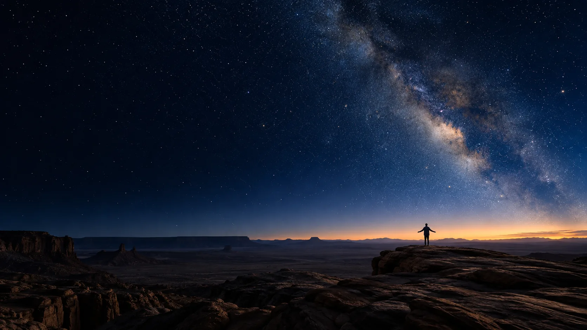

EXPLORE自在远行 / BEYOND THE KNOWN
探索者 · 向未知前行
心所向
行致远.
一次走向远方的出发
一段发现自我的旅程
探索，不止于路途
探索者 · 向未知前行
一次走向远方的出发
一段发现自我的旅程
探索，不止于路途

BEYOND THE KNOWN
以好奇感知世界，以行动回应向往
在星空、山野与海岸之间，发现自己的方向
让每一次出发，都成为自由生长的起点
UNDER THE STARS
把目光交给星空，把答案留给自己。
在辽阔之中，为好奇留一片空白。
ABOVE THE ORDINARY
每一步，都有脚下的回响。
新的风景，藏在下一次出发里。
FOLLOW YOUR OWN PACE
让脚步回应心里的热望。
不必追赶谁，奔向自己的远方。
04 / DISCOVER THE DETAILS
从视觉、行动到内心感受，切换三个角度继续探索。
深蓝与鎏金彼此映照
用克制的色彩，打开探索的第一重视野
让脚步成为真实的刻度
在行进与停留之间，找到自己的节奏
每一次出发都回应内心
把好奇、勇气与热爱，带向更远的地方
05 / DIFFERENT PATHS · 人物画像
不同的热爱，汇聚三种鲜明的生活方式。
06 / INTO THE WILD · 户外探索者
穿过一片安静的林，
听风、鸟鸣和自己的呼吸。
世界很大，足够装下许多问题；
脚下这一步，又让一切变得简单。
走进山野，也走近自己。
06 / MADE WITH CARE · 品质创造者
一张图纸，一次推敲，
把模糊的念头变成清晰的轮廓。
选择、调整，再重新开始。
那些不易被看见的耐心，
最终会留在作品的细节里。
06 / EVERYDAY ORIGINAL · 生活创作者
留出一点时间，认真做一杯咖啡。
尝试不同的比例，记录今天的灵感。
无需复制谁的标准，
把喜欢的细节慢慢积攒，
日常，也能成为自己的创作。
知之真切笃实处便是行，行之明觉精察处便是知
BEYOND THE KNOWN